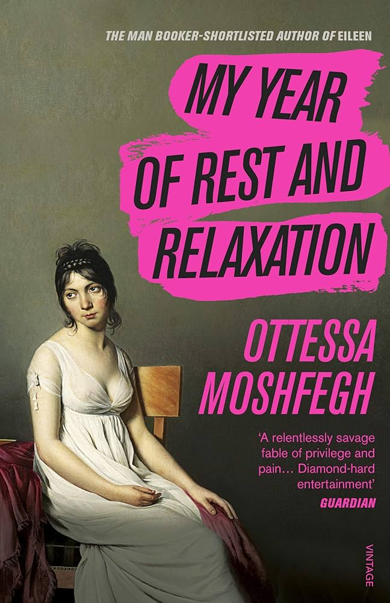
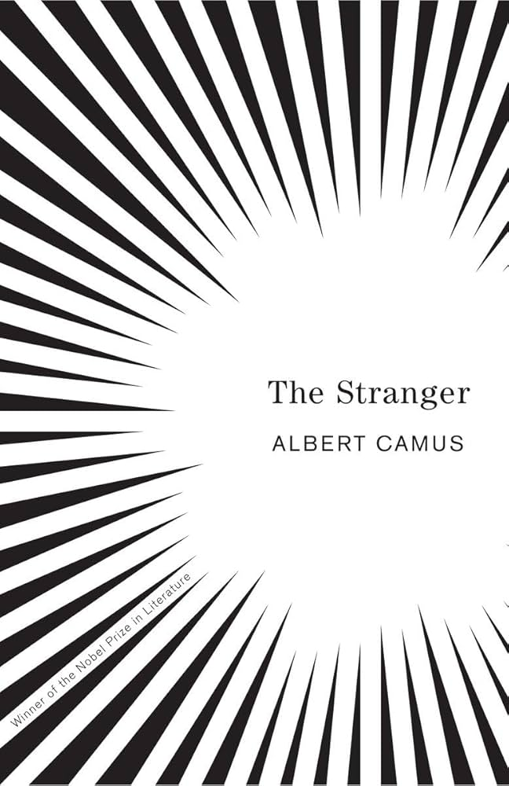
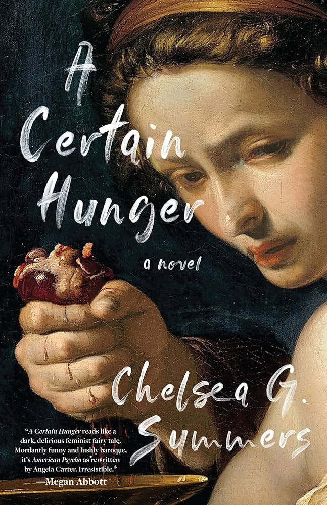
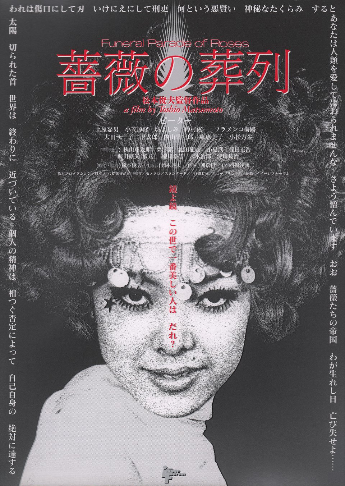
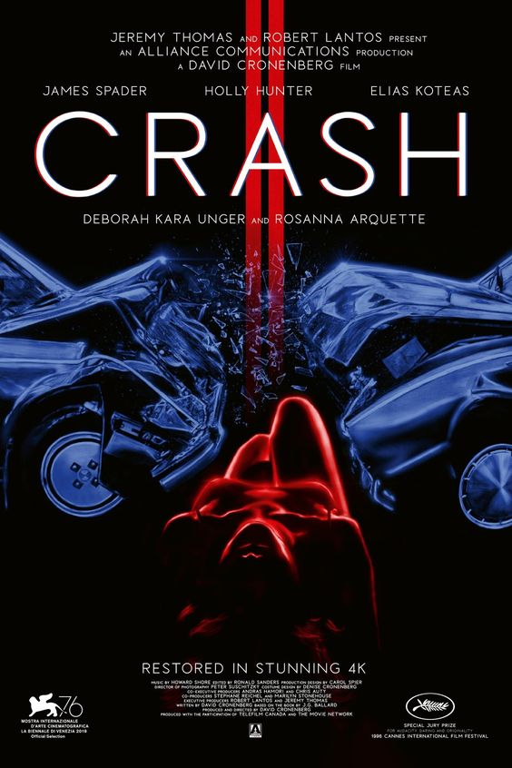
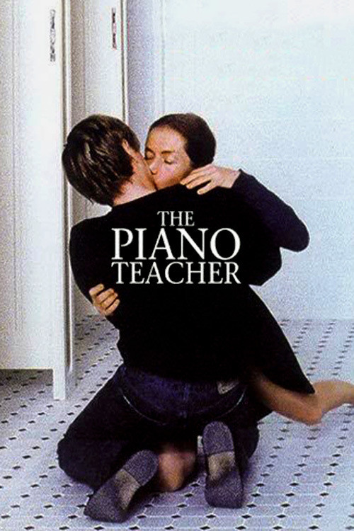
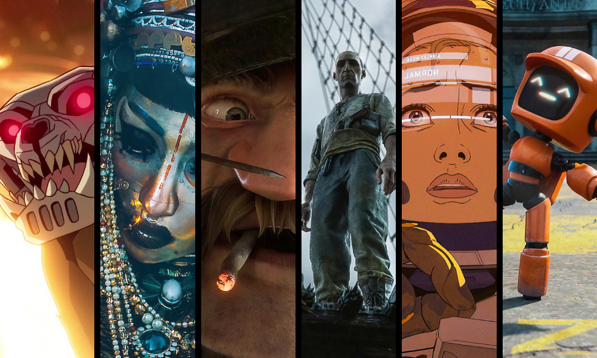
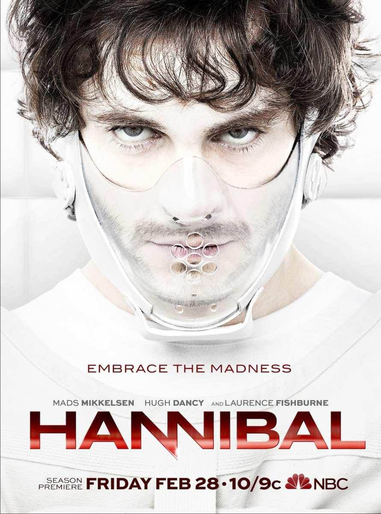
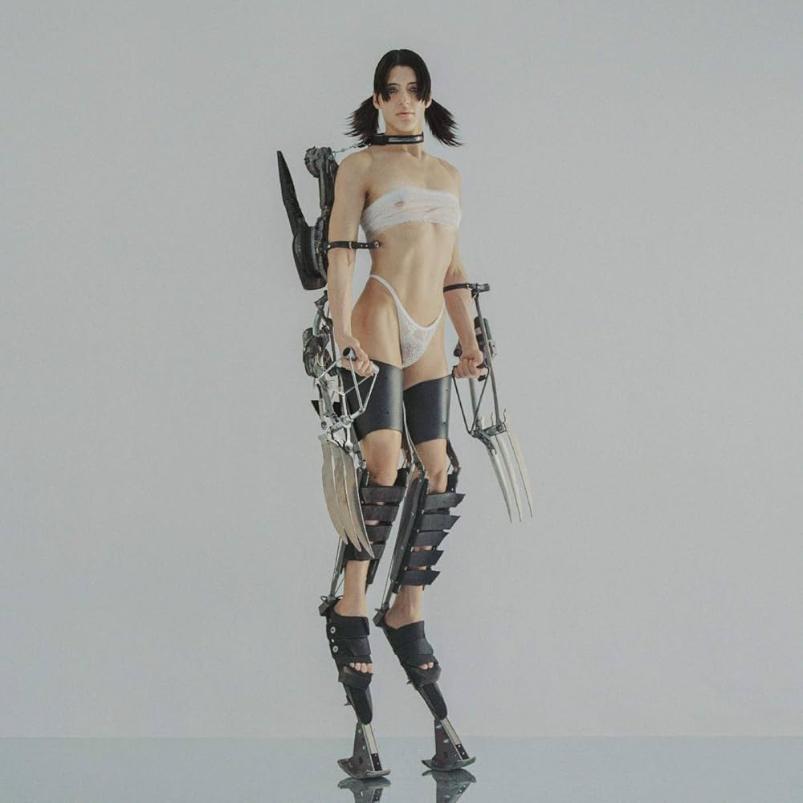
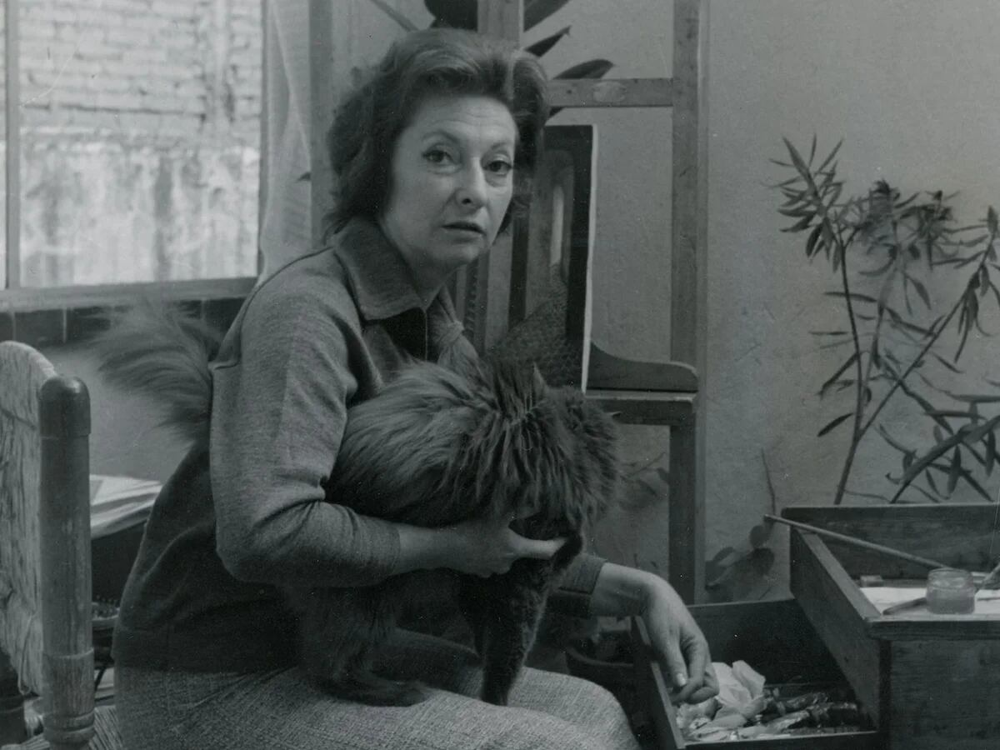

Education
- 2015-2018: Instituto de Tecnológico de Educación Avanzada
-
2018-2022: Centro de Enseñanza Técnica Industrial
This institution is a highschool with technical degrees that you can specialize from, so I graduated from pharmaceutical chemist, that is also the reason I did 4 years instead of 3 years. This part of my education was really hard and anxiety inducing, but thankfully i learned so much and it helped me to find the right career path, that is why i decided to study animation (haha).

- 2022-Present: Universidad Panamericana

Skills
Hobbies
Favorite food
Top 5:
- Japanese food
- Chinese food
- Italian food
- Thai food
- Mexican food
Bottom 3:
- Argentinian food
- German food
- French food
Books, Movies & TV Shows
- Books
Author: Ottessa Moshfegh
Synopsis:Our narrator should be happy, shouldn’t she? She’s young, thin, pretty, a recent Columbia graduate, works an easy job at a hip art gallery, lives in an apartment on the Upper East Side of Manhattan paid for, like the rest of her needs, by her inheritance. But there is a dark and vacuous hole in her heart, and it isn’t just the loss of her parents, or the way her Wall Street boyfriend treats her, or her sadomasochistic relationship with her best friend, Reva. It’s the year 2000 in a city aglitter with wealth and possibility; what could be so terribly wrong?
Author: Albert Camus
Synopsis:The Stranger has long been considered a classic of twentieth-century literature. Le Monde ranks it as number one on its "100 Books of the Century" list. Through this story of an ordinary man unwittingly drawn into a senseless murder on a sundrenched Algerian beach, Camus explores what he termed "the nakedness of man faced with the absurd."
Author: Chelsea G. Summers
Synopsis:The book follows food writer Dorothy Daniels, who is also a convicted serial killer. Daniels narrates the story of her crimes from prison, moving back and forth in time between her life behind bars and the life that led to her imprisonment: specifically the food she ate, including eating men. A satire of early foodieism, a critique of how gender is defined, and a showcase of virtuoso storytelling, Chelsea G. Summers' A Certain Hunger introduces us to the food world's most charming psychopath and an exciting new voice in fiction.
 - Movies
Director: Toshio Matsumoto
Synopsis:An electrifying journey into the nether-regions of the late-’60s Tokyo underworld. The film revolves around the underground gay scene in Tokyo. The main plot continuously jumps around the timeline of events. The film also contains scenes shot in a documentary style, in which the film's cast members are interviewed about their sexuality and gender identity.
Director: David Cronenberg
Synopsis:SHOCKING. POWERFUL. SCANDALOUS. PROVOCATIVE. EROTIC. BRILLIANT. After getting into a serious car accident, a TV director discovers an underground sub-culture of scarred, omnisexual car-crash victims, and he begins to use car accidents and the raw sexual energy they produce to try to rejuvenate his sex life with his wife.
Director: Michael Haneke
Synopsis:Erika Kohut, a sexually repressed piano teacher living with her domineering mother, meets a young man who starts romantically pursuing her.
 - TV Shows
- Her whole discography, has reinvented experimental music
- Her role in Lars Von Trier's "Dancer in the dark"
- Her iconic swan dress in the 2001 Academy Awards
- The release of her album "Kick i" (my favorite album ever)
- Her collaborative album with Björk "Utopia"
- Realeasing 5 albums and amazing visuals in one week (Kick ii,iii,iv,v)
- Her migration to Mexico due to the spanish civil war that expanded her way of artistry
- The friendship and inspiration between her and Leonora Carrington
- How her knowledge in psychoanalysis, alchemy, philosophy and magic reflected in her artwork
Favorite episode: Zima blue and Jibaro
Synopsis:Is an adult animated anthology television series created by Tim Miller. Is composed by ndividual episodes that are produced by different animation studios from a range of countries and explore diverse genres, particularly comedy, horror, science fiction, and fantasy.
Favorite episode: The wrath of the lamb
Synopsis:A talented but unstable FBI profiler named Will Graham is brought in to find serial murderers. Jack Crawford pairs him with the astute psychiatrist Dr. Hannibal Lecter because his unique capacity for empathy with them compromises his sanity. Will has no idea that Lecter is a crafty cannibalistic killer who plays tricks on him and the FBI. As their twisted relationship develops, Lecter drives Will's sanity to the breaking point, erasing the distinction between hunter and hunted and ultimately compelling Will to face the darkness within him and the true nature of the man he believed to be his confidant.
Favorite episode: The end of evangelion
Synopsis:In 2015, 15 years after the enormous catastrophe that killed half of the world population, another crisis has come - the unidentified invaders called "Angels" begin to attack human-kind. Any of their weapons are useless against the so-called "Absolute Terror Field". But now human-kind had created an exception;the ultimate all-purpose humanoid weapon "Evangelion". To operate this exception needs the minds of "Children", 14-year-old juveniles. Shinji Ikari, the only son of the commander-in-chief of the team that administered Evangelion, is selected as the third of the "Children"...!

My icons
Björk
Date of birth: 21/11/1965
Profession: Musician, actress, DJ, Producer
Highlights in career
Arca
Date of birth: 14/10/1989
Profession: Musician, producer, DJ, model
Highlights in career:
Remedios Varo
Date of birth: 16/12/1908
Date of death: 08/10/1963
Profession: Painter, writer and artist
Highlights in career:
Agenda